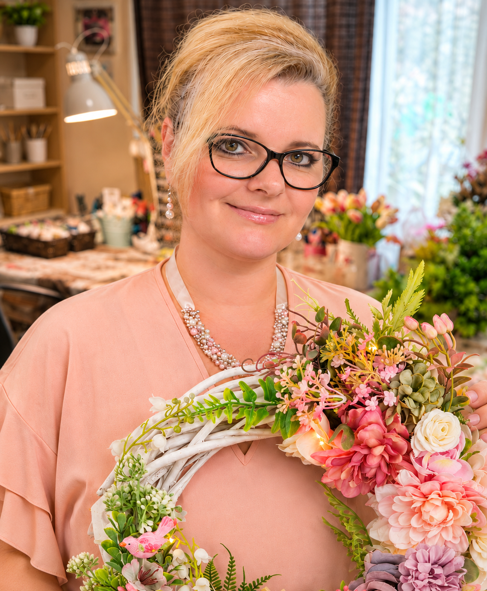
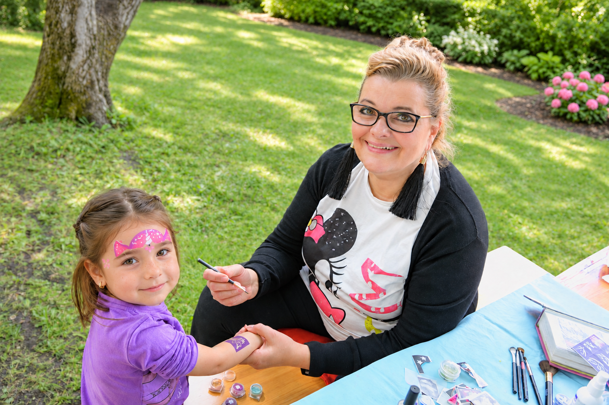
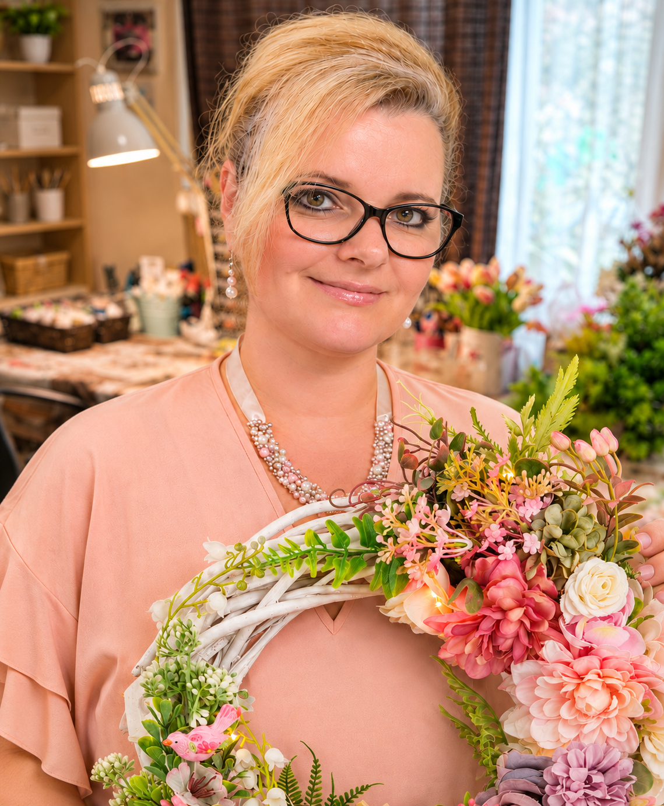
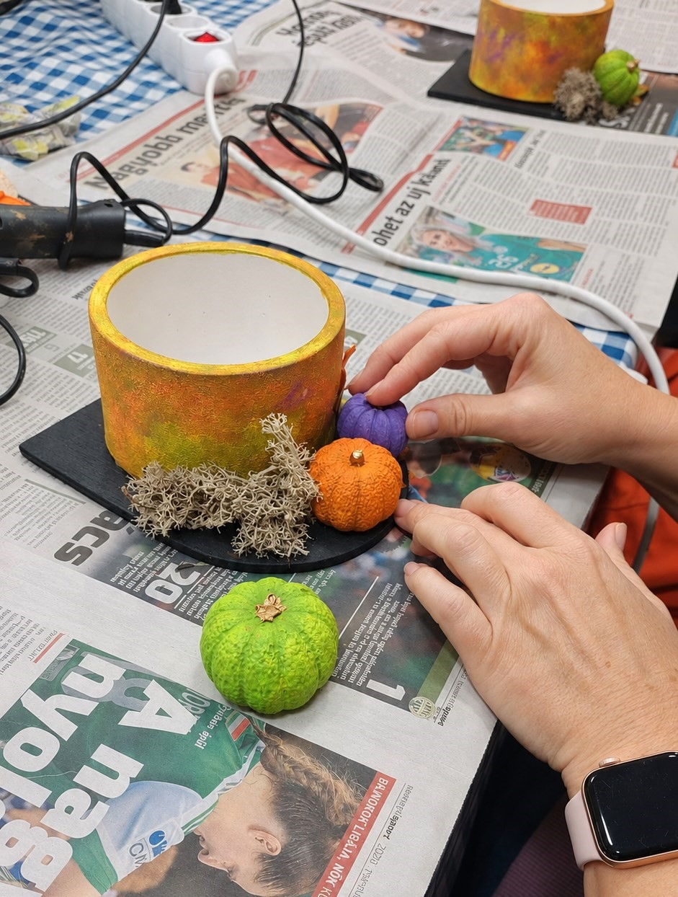

Szülinapi zsúr
Közös játék és program a gyerekek életkorához, létszámához és a helyszínhez igazítva.
Szülinapot tervezekGyerekzsúrok, arcfestés és kézzel készített díszek. Minden alkalom más, ezért először mindig beszélgetünk arról, mire készültök.
Válassz szolgáltatást
Három út ugyanabból a szeretetből: közös játék, színes élmények és személyes, kézzel készített részletek.
Közös játék és program a gyerekek életkorához, létszámához és a helyszínhez igazítva.
Szülinapot tervezek
Külön vagy együtt kérhető program szülinapra és más rendezvényekre.
Rendezvényre keresek programot
Egyedi ajtó- és asztaldíszek, ajándékok, apró részletekkel és saját elképzelésekre is nyitottan.
Megnézem az alkotásokatÉvi vagyok. Óvodapedagógusként mindig közel állt hozzám a gyerekekkel töltött idő és a közös játék. Később a szülinapi programok mellé az arcfestés és a csillámtetoválás is megérkezett.
A kézműveskedés családnak és barátoknak készített ajándékokkal indult. Ma a gyerekek ünnepei és a kézzel készült díszek egyaránt hozzátartoznak a Csirivirihez.
Az aktuális díszeket a Facebook-oldalon találod. Ha egy darab megtetszik, vagy saját ötleted van, írj üzenetet. Megbeszéljük az elérhetőséget, az elkészítés idejét és az árat.
Aktuális díszek a FacebookonÉvi óvodapedagógusi és játékanimátori hátterét a zsúrok tervezésében is használja.
A programot a korosztályhoz, létszámhoz, helyszínhez és az alkalomhoz igazítja.
A díszek kézzel készülnek; saját ötlettel is megkeresheted Évit.
„Minden alkotás egy kis szeretet, amit továbbadhatok.”Évi

Időnként kézműves alkalmakat tartok a Csiriviri LakásMűhelyben, Budapest XIX. kerületében. Az aktuális témákat és időpontokat a Facebook-oldalon osztom meg. Csoportos kitelepülésről is egyeztethetünk.
Aktuális műhelyhírek a FacebookonÍrd meg a dátumot, a helyszínt és röviden az elképzelésedet. Visszajelzek, és egyeztetjük a lehetőségeket.
E-mailt írok Évinek